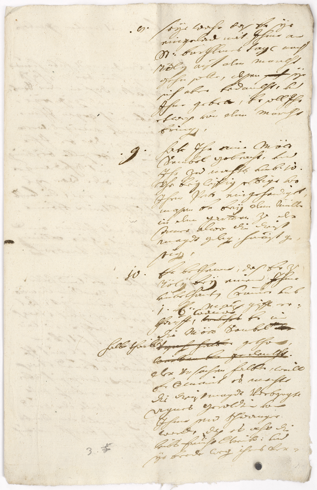

BayHStA, Benediktbeuren KL, 107 1/3



Kommentar
Editor: magdalena.weileder@textgrid.de
Archiv: BayHStA
Bestand: Benediktbeuren KL
Signatur: 107 1/3
Ort:
Datum: 1705 August/September
Schlagwort: Akt
Schwierigkeitsgrad: schwer
Kurzbetreff:
Protokoll einer Aussage in einem Vergiftungsprozess
Protokoll einer Aussage in einem Vergiftungsprozess
Schreiberhände:
- (S1)
Kommentar:
In einem Akt über einen Vergiftungsprozess ist dieses Protokoll der Aussage des Maurersohns Baltasar Carl überliefert. Er sagt aus, der Dienstmagd Agnes Geroldt eine vergiftete Mettsemmel gegeben zu haben, weil er befürchtete, sie sei schwanger, und die mit ihr begangene „Unehre“ vertuschen wollte. Da die nichts ahnende Dienstmagd die Semmel mit ihrer Familie teilte, erlitten außer ihr auch Mutter, Bruder und Nichte Vergiftungserscheinungen, der Bruder verstarb einige Tage später.
Das Protokoll ist eilig und wenig sorgfältig in Kurrent geschrieben und enthält einige Korrekturen. Die Lesbarkeit wird zudem durch einen teilweise fehlerhaften Satzbau erschwert.
Viele Buchstaben sind nur undeutlich ausgeführt oder verschliffen (z.B. n in Z. 6: vnd, c in Z. 4: Marckht), häufig sind sie nur aus dem Kontext heraus zu unterscheiden (z.B. a, e und o, b und E, k und l). Der Schreiber verwendet am Wort- und Silbenende neben rundem auch langes s (z.B. Z. 1: das). Es finden sich d(er)- und v(er)-Kürzungen, wobei v oft kaum noch als solches erkennbar ist. en am Wortende wird durch mehr oder weniger stark verdickte Abstriche gekürzt (z.B. Z. 2: eingelad(en), Z. 9: bring(en)) oder stark verschliffen (Z. 21: vnbekhannten und auf der folgenden Seite Z. 9: Verlohren). Ob es sich bei z am Wortanfang um einen Groß- oder Kleinbuchstaben handelt, ist nicht eindeutig zu entscheiden, im Wortinneren erscheint es dagegen ohne Überlänge und leicht gedreht, ähnlich einem n mit verlängertem zweiten Schaft (z.B. Z. 4: Tölz).
In einem Akt über einen Vergiftungsprozess ist dieses Protokoll der Aussage des Maurersohns Baltasar Carl überliefert. Er sagt aus, der Dienstmagd Agnes Geroldt eine vergiftete Mettsemmel gegeben zu haben, weil er befürchtete, sie sei schwanger, und die mit ihr begangene „Unehre“ vertuschen wollte. Da die nichts ahnende Dienstmagd die Semmel mit ihrer Familie teilte, erlitten außer ihr auch Mutter, Bruder und Nichte Vergiftungserscheinungen, der Bruder verstarb einige Tage später.
Das Protokoll ist eilig und wenig sorgfältig in Kurrent geschrieben und enthält einige Korrekturen. Die Lesbarkeit wird zudem durch einen teilweise fehlerhaften Satzbau erschwert.
Viele Buchstaben sind nur undeutlich ausgeführt oder verschliffen (z.B. n in Z. 6: vnd, c in Z. 4: Marckht), häufig sind sie nur aus dem Kontext heraus zu unterscheiden (z.B. a, e und o, b und E, k und l). Der Schreiber verwendet am Wort- und Silbenende neben rundem auch langes s (z.B. Z. 1: das). Es finden sich d(er)- und v(er)-Kürzungen, wobei v oft kaum noch als solches erkennbar ist. en am Wortende wird durch mehr oder weniger stark verdickte Abstriche gekürzt (z.B. Z. 2: eingelad(en), Z. 9: bring(en)) oder stark verschliffen (Z. 21: vnbekhannten und auf der folgenden Seite Z. 9: Verlohren). Ob es sich bei z am Wortanfang um einen Groß- oder Kleinbuchstaben handelt, ist nicht eindeutig zu entscheiden, im Wortinneren erscheint es dagegen ohne Überlänge und leicht gedreht, ähnlich einem n mit verlängertem zweiten Schaft (z.B. Z. 4: Tölz).
Entzifferung
(Absatz Beginn)
1 .8. seÿe wahr das Er sÿe
2 eingelad(en) mit Jhme an
3 S(ank)t barthlmes tage nach
4 Tölz auf den Marckht
5 gehn solle, dessen sich(getilgt) sÿe
6 sich aberbedanckht, vnd
7 Jhne gebett(en),Er soll Jhr
8 etwas von dem Marckht
9 bring(en).
10 .9.habe Jhraine Mött
11 Sembel gebracht, vnd
12 Jhr Zunachts vmb .10.
13 Vhr beÿleiffig selbige vor
14 JhrmPett eingehendiget,
15 massenEr beÿ dem Müller
16 in demGartten Zu der
17 Cameralwo die dienst
18 magdtgeleg(en) hinauf ge-
19 stig(en).
20 .10.Er bekhenne, das Er Zu
21 Tölz beÿeinem Jhme
22 vnbekhantenCram(m)er vmb
23 .1. k(reuzer)Maus gifft er-
24 khaufft,wauon(Über der Zeile nachgetragener Text)welches(getilgt) Er in
25 die Mött Sembel […](Über der Zeile nachgetragener Text)(getilgt)a)der(getilgt)
26 halb thaill(Links nachgetragener Text)Vrsach(en) halber(getilgt)getha(n),
27 weillen Er gedenckht.(getilgt)
28 der Vrsachen halber, weill
29 Er v(er)maint es mochte
30 die dienstmagdt Vorbesagte
31 AgnesGeroldtin von
32 Jhmesein schwanger
33 word(en), das es also die
34 leibs fruchtv(er)treib(en) vnd
35 sÿe beedeweg(en) ihres Ver-
(Absatz Ende)
a) höhergestelltes durchgestrichenes Wort nicht mehr zu entziffern
Transkription
(Absatz Beginn)
1 8. Seÿe wahr, das er sÿe
2 eingeladen, mit ihme an
3 sankt Barthlmes tage nach
4 Tölz auf den marckht
5 gehn solle, dessen a) sÿe
6 sich aber bedanckht, und
7 ihne gebetten, er soll ihr
8 etwas von dem marckht
9 bringen,
10 9. Habe ihr aine mött-
11 sembel gebracht, und
12 ihr zu nachts umb 10
13 uhr beÿleiffig selbige vor
14 ihrm pett eingehendiget,
15 massen er beÿ dem Müller
16 in dem gartten zu der
17 camer, alwo die dienst-
18 magdt gelegen, hinaufge-
19 stigen,
20 10. Er bekhenne, das er zu
21 Tölz beÿ einem ihme
22 unbekhanten crammer umb
23 1 k. mausgifft er-
24 khaufft, wavonb) er in
25 die möttsembelc)
26 halb thailld) gethan,
27 e) der ursachen halber, weill
28 er vermaint, es mochte
29 die dienstmagdt, vorbesagte
30 Agnes Geroldtin, von
31 ihme sein schwanger
32 worden, das es also die
33 leibsfrucht vertreiben und
34 sÿe beede wegen ihres ver-
(Absatz Ende)
a) durch Durchstreichen getilgt: "sich"(Textzitat)
b) "wavon"(Textzitat) über durch Durchstreichen getilgtes "welches"(Textzitat) geschrieben
c) durch Durchstreichen getilgt: "[…] der"(Textzitat), dabei erstes, höhergestelltes Wort nicht mehr entzifferbar
d) links neben der Zeile nachgetragen: "halb thaill"(Textzitat), durch Durchstreichen getilgt: "ursachen halber"(Textzitat)
e) Zeile durch Durchstreichen getilgt: "weillen er gedenckht,"(Textzitat)